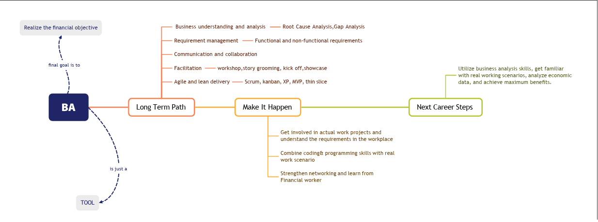
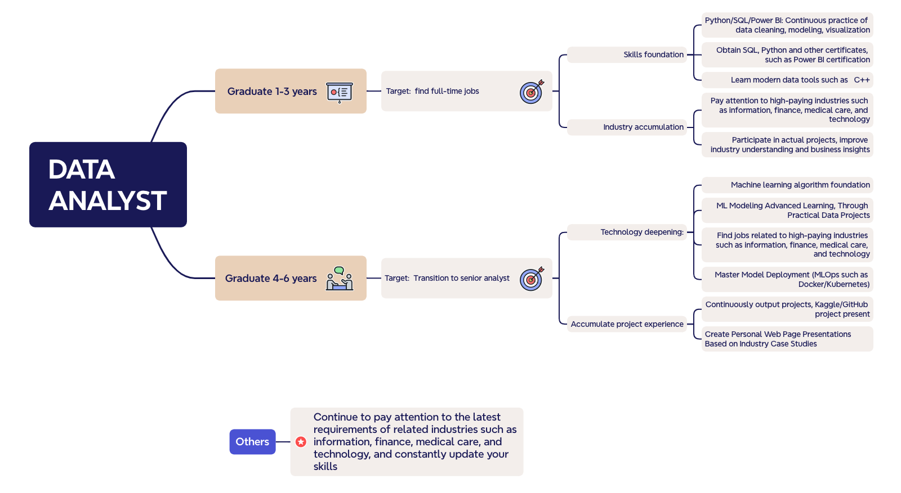
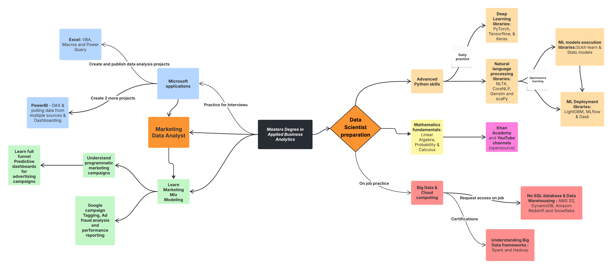

Individual Career Strategy based on Research and Quantitative analysis
Final Report
Authors
Affiliation
Hiten Ladkani
AD688 Cloud Computing and Big Data Analytics Team
Xinyi Dong (Sheryl)
AD688 Cloud Computing and Big Data Analytics Team
Yao Ma (April)
AD688 Cloud Computing and Big Data Analytics Team
1 Welcome everyone!
This is a structure analysis of how three of the most competitive and rapidly evolving fields in data and tech are demanding candidates to constantly reskill and upskill. The purpose of the analysis is to identify patterns and gaps in the labour market and provide a summarized recommendation for ourselves and anyone interested in these domains so that we can land our dream jobs either in the United states or one’s home country.
Please read through both the qualitative and quantitative analysis for detailed walkthrough of the approach and results.
Good Luck
Welcome Banner
title: “Qualitative Research on Business Analytics, Data Science and Machine Learning Trends” format: html: csl: apa.csl bibliography: references.bib —
2 Selection Rationale:
We are at the early stages of our careers in the data analytics field, and as we look to pursue opportunities in the current, rapidly evolving U.S. market—specifically for data or business analysts—our priority is to focus on the critical requirements of data roles that help us fill any existing gaps in our skill set. Hence, we will conduct a qualitative deep dive into trends and recent changes in the analytics, data science, and machine learning domain before proceeding to verify whether this qualitative analysis is supported by the quantitative assessment of the Lightcast job posting data we have at hand.
Also, it is important to note that most data analytics principles can be applied to business analytics, as the two roles have a high degree of overlap. The former involves cleaning and processing data, while the latter (business analytics) takes those insights further and translates them into business decisions or improvements in policies, processes, or operations. In essence, data analytics focuses on the “what” and “why” from data, while business analytics goes further into developing the “how” and “what next” by leveraging those insights. (Jin Liu & Lyu, 2024)
3 Introduction:
This is a brief overview of how the convergence of Data analytics, Big Data and Machine Learning has become an influential force in every business that relies on data-driven decision-making. It also covers how Industry 4.0 is revolutionizing the manufacturing as well as service processes all over the world. In simple words, Industry 4.0 is an amalgamation of multiple disciplines like Internet of Things (IoT), Industrial Internet of Things (IIoT), artificial intelligence, machine learning, hyper convergent Infrastructure, deep learning and virtualization, all these create a strong and intelligent production system for businesses that enable them to carve insights from heaps of data that they are collecting but at the same time translate them into actionable items that are strongly backed. (Li, 2022). The review then shift focus on the importance of reskilling and/or upskilling is critical to be part of the talent that realizes Industry 4.0 to realize its full potential.
The World Economic Forum projected that half of all employees worldwide would need to reskilling by 2025 in its future jobs report 2020. (Forum, 2020). Life-long learning is not a choice but a norm in 2025 with the advent of AI, advanced applications of machine learning and increase uncertainty around ability of AI to replace candidates with jobs that have tasks that have potential to be automated.
The top 10 skills comparison from 2015, 2020 to 2025:
In context of Data science and machine learning, these are most sought soft skills in 2025, however industry reports reveal that there is shortage of big data client in the field and companies prefer candidates that possess one to three years of experience because they can quickly adapt to changing industry needs and help companies realize their full potential backed by big data processing and analysis. (Yugal, 2022) The literature review delves into details of each domain, explaining how they have evolved and what is required for success in this fast-evolving tech space.
4 Machine Learning Trends:
As the digital era continues to push the envelope of transformation, the trifecta or the combination of Data Analytics, Big Data and Machine learning becomes a vital source for businesses to search practical insights and long-term advancement. This intersection has necessitated the need for new skill sets to effectively analyze and interpret complex, high-volume data. To understand the required skills in this domain, it is important to understand the full range of applications of ML. It ranges from decision-making processes, modeling layout form, identification of results from data analysis, and forecast for big data analytics-oriented programs.
In terms of industry specific applications, in life sciences ML is progressively used as a analytical and computational tool for study of vast unstructured data of genome libraries to set up automated workflows. Virtual assistants have been powered by ML-enabled speech recognition technology. In combination with ML, Deep learning has become a potent instrument in variety of sectors like audio and picture identification, natural language processing and even medicine (Bhattacherjee & Badhan, 2024). For these a sustainable talent training system is required, and it becomes the mission and responsibility of educational institutions as well as individual candidates to realize the full-scale potential of this domain. For instance, deep learning libraries like PyTorch, TensorFlow, Keras and MXNet have recently been developed and if these are introduced as conceptual content to students in advance, it will place a foundation of big data talents at the forefront and address the shortage of experienced and skilled talents that the business are looking for. (Han & Ren, 2024) A cluster analysis of Big Data expertise needs provided scores for various variables for each tool, algorithms and techniques.
5 Business Analytics Trends:
With the advent of AI and digital governance evolving rapidly, the Business analytics field has expanded beyond just managerial outlook and expertise in the business process with some level of analysis. The emergence of Big Data has led to the involvement of Business analysts in statistical analysis as well as processing of vast amounts of data to generate insights. BA & intelligence teams can take those insights further to translate them into business process improvements, development of new practices by generating dashboards or written reports for stakeholders. (Yugal, 2022)
BA & I involves a lot more techniques post 2023 that are implemented to structure a process of business decision-making. AI/ML integration, Cloud based analytics, and predictive analytics are at the forefront of this domain as volume of data is expanding rapidly and so as the cloud infrastructure adoption to execute analytics and forecast trends, customer behavior and understand market dynamics. (Business Management & Research, n.d.)
BA techniques
6 Data Science Trends
To establish an understanding of this domain in simpler terms, one can say it is a step or few advanced to data analytics. It has high overlap with ML engineers and MLOps engineers and that makes sense in the real world as more and more companies expect their employees to have an understanding of a bit of everything because of the need of strong collaboration between these teams for each project.
About 20,800 openings for data scientists are projected each year since 2024, on average over the decade. The growth of this space is expected to be 36% from 2023 to 2033, which is much faster than average of all the other occupations. (Labor Statistics, 2024)
Data science is more of an umbrella term that has been derived from industrial demand. The T-shaped configuration of skills is generally used to analyze the breadth of knowledge and skills required for a domain and to identify a functional area that one would like to gain expertise within that domain. The T-shape or π-shaped diagram for analytics is shown below: (Shirani, 2016)
Exploring the skillsets that have been dominant in data science roles across the board in recent years are below: ##Deep Learning: It is at the forefront of many in-demand frameworks right now, such as generative adversarial networks (GANs) and reinforcement learning which dive into artificial intelligence but as described in this entire review, each of these fields touch AI discipline in some form with data science and ML being closest to it. Sophisticated models like image classification, NLPs and anomaly detection use deep learning techniques and candidates who are looking to enter this space must have strong foundation of mathematical concepts (linear algebra, calculus, probability and statistics) and then should have understanding of core principles of deep learning – neural networks and backpropagation. (Nobrega, 2024)
##Machine Learning Deployment: It is understood that experimenting various ML models on the data to capture patterns is a pre-requisite now, deploying the validated models in a production environment is crucial to derive business value. For this, candidates are required to have a strong grasp of fundamentals of ML, they should be familiar with one of the cloud platforms and should have understanding of deployment tools like Docker or Kubernetes. In addition to this, understanding of MLOps best practices and lifecycle management of ML models is also expected. Hence, it is clear that the role involves lifelong learning and hands on practice on the tools and to have all basics covered so that foundation for creativity can be laid when it comes to execution. (Nobrega, 2024)
7 Conclusion:
It is evident that in the past 2 years, each role deals with vast amount of data and hence understanding of cloud infrastructure and big data techniques is essential for success in these roles. Although, the expertise or level of skills in these disciplines may vary for each role but it is essential to have curiosity and willingness to upskill and reskill as per the evolving needs in the analytics domain and overall business requirements to stay relevant in the market.
8 References
9 Introduction to Quantitative Analysis
Now that we had a deep dive in qualtitative analysis of Machine Learning, Data Analyst and Data Scientist positions, we want to leverage the Lightcast job postings data from 2024 to verify whether the findings from the research align with the current data from the market. One of the consistent themes from the research was an overlap between Machine Learning and Data Science positions because of skillsets required for these experienced roles. We will also explore if Business analyst/Data analyst positions have few most in-demand skillsets and what are they as these are foundational roles in data.
10 Methodology
The first step would be to clean the dataset and identify the most relevant columns. Subset the data for Machine Learning, BA/DA and Data scientist positions data so these can be processed in silos Peform EDA for each role and highlight patterns or trends Perform Random Forest algorithms to predict salaries for these positions Summarise the findings
11 Data Cleaning and Preprocessing
Code
import pandas as pdimport numpy as npimport plotly.express as pximport seaborn as snsimport matplotlib.pyplot as pltimport polars as plfrom pyspark.sql import SparkSessionimport plotly.io as pionp.random.seed(42)pio.renderers.default ="notebook+notebook_connected+vscode"# Start a Spark sessionspark = SparkSession.builder.appName("JobPostingsAnalysis").getOrCreate()# Load the CSV file into a Spark DataFramedf = spark.read.option("header", "true").option("inferSchema", "true").option("multiLine","true").option("escape", "\"").csv("./data/lightcast_job_postings.csv")# Show schema#df.show(5, truncate = False)
# Listing data types of the cleaned DataFrame#df_cleaned.dtypes
Code
# Converting spark dataframe to SQL table to have subsets for Machine Learning positions.df_cleaned.createOrReplaceTempView("job_postings_data")ml_data_df = spark.sql(""" SELECT * FROM job_postings_data WHERE SALARY IS NOT NULL AND SALARY > 0 AND TITLE_CLEAN LIKE '%machine learning%'; """)ml_data_pd = ml_data_df.toPandas()#ml_data_pd.info()
25/06/29 23:26:34 WARN SparkStringUtils: Truncated the string representation of a plan since it was too large. This behavior can be adjusted by setting 'spark.sql.debug.maxToStringFields'.
[Stage 2:> (0 + 1) / 1]
+---------------------------------------------------------------------------------------------------------------------------------+
|TITLE_CLEAN |
+---------------------------------------------------------------------------------------------------------------------------------+
|enterprise artificial intelligence machine learning ai ml platform product manager senior lead data product management consultant|
+---------------------------------------------------------------------------------------------------------------------------------+
ML specific positions are limited in title clean - Since we cannot seem to distinguish the data between Data Science and Machine Learning, from the dataset using job titles, we will focus on Data Scientist and Business Analyst positions. Qualitative data also suggested a strong overlap between Data Science and Machine Learning positions because the current job market expects candidates for Data scientist positions to have skills in not just ML models but production deployment and Artificial intelligence as well. (Nobrega, 2024)
Code
# Subsetting the main dataframe for Business Analyst, Data Analyst and Business Intelligence positions.ba_da_data_df = spark.sql(""" SELECT * FROM job_postings_data WHERE SALARY IS NOT NULL AND SALARY > 0 AND LOT_SPECIALIZED_OCCUPATION_NAME IN ('Business Intelligence Analyst', 'Business Analyst (General)', 'Data Analyst');""")ba_da_data_pd = ba_da_data_df.toPandas()
Code
# Subsetting the main dataframe for Data Science positions.ds_data_df = spark.sql(""" SELECT * FROM job_postings_data WHERE SALARY IS NOT NULL AND SALARY > 0 AND SOC_2021_5_NAME = 'Data Scientists';""")ds_data_pd = ds_data_df.toPandas()
# Removing job postings with no titles and min years of experienceba_da_data_pd = ba_da_data_pd.dropna(subset = ['TITLE_CLEAN'])ba_da_data_pd = ba_da_data_pd.dropna(subset = ['MIN_YEARS_EXPERIENCE'])#ba_da_data_pd.info()
# Removing job postings with no titles and min years of experienceds_data_pd = ds_data_pd.dropna(subset = ['TITLE_CLEAN'])ds_data_pd = ds_data_pd.dropna(subset = ['MIN_YEARS_EXPERIENCE'])#ds_data_pd.info()
Code
# Sorting categories under remote type name for both dataframesba_da_data_pd['REMOTE_TYPE_NAME'].unique()ba_da_data_pd['REMOTE_TYPE'] = ba_da_data_pd['REMOTE_TYPE_NAME'].replace({'[None]': 'Onsite','Not Remote': 'Onsite','Hybrid Remote': 'Hybrid','Remote': 'Remote'}).astype('category')ds_data_pd['REMOTE_TYPE_NAME'] = ds_data_pd['REMOTE_TYPE_NAME'].replace({'[None]': 'Onsite','Not Remote': 'Onsite','Hybrid Remote': 'Hybrid','Remote': 'Remote'}).astype('category')# Sorting categories under employment type name for both dataframesba_da_data_pd['EMPLOYMENT_TYPE_NAME'].astype('category')ds_data_pd['EMPLOYMENT_TYPE_NAME'].astype('category')
Code
#ba_da_data_pd['EDUCATION_LEVELS_NAME'].unique()
Code
# Converting education levels into 2 categories Bachelor's or lower and Master's or PhDimport ast # Using ast.literal_eval to first convert stringified lists into python lists import re # Need to remove those extra spaces in the Masters degree for proper classificationdef clean_text(text): text = text.replace("\n", " ") text = re.sub(r"0\s+", " ", text) # Replacing those multiple spaces with single space for Masters degreereturn text.strip()def classify_education_level(edu_levels):try: levels = ast.literal_eval(edu_levels) levels = [clean_text(level) for level in levels] # defining categories now Bachelors_or_lower = {"Bachelor's degree", "Associate degree", "No Education Listed", "High school or GED"} Masters_or_PhD = {"Master's degree", "Ph.D. or professional degree"}# Now applying IF logicifany(level in Bachelors_or_lower for level in levels):return"Bachelors_or_lower"elifany(level in Masters_or_PhD for level in levels):return"Masters_or_PhD"else:return"Other"except:return"Unknown"# Now we apply it to both dataframes ba_da_data_pd['EDUCATION_LEVELS'] = ba_da_data_pd['EDUCATION_LEVELS_NAME'].apply(classify_education_level).astype('category')ds_data_pd['EDUCATION_LEVELS'] = ds_data_pd['EDUCATION_LEVELS_NAME'].apply(classify_education_level).astype('category')
Summarizing the cleaning of data for both positions: The most important data cleaning steps performed here were slicing the data for each position to process them individually. Location column was separated into Latitude and Logitude to enable geographic analysis of job postings. Remote type, education levels and employment type columns were converted into categories to visualized summarized data. Skillsets columns will be cleaned at a later stage when we analyze top skills for each position and then progress into Machine Learning.
12 Geographical analysis of Business Analytics, Data Science and Machine Learning
Code
# Since the data is ready we can now create comparison bar plots # Top 10 states with highest number of job postings for Business Analyst, Data Analyst and Data Scientist positionsimport hvplot.pandasba_da_state_counts = (ba_da_data_pd.groupby(['STATE_NAME', 'EDUCATION_LEVELS']).size().reset_index(name='COUNT'))ds_state_counts = (ds_data_pd.groupby(['STATE_NAME', 'EDUCATION_LEVELS']).size().reset_index(name='COUNT'))top_states_da = (ba_da_state_counts.groupby('STATE_NAME')['COUNT'].sum().nlargest(10).index)ba_da_top10 = (ba_da_state_counts[ba_da_state_counts['STATE_NAME'].isin(top_states_da)]).sort_values(by='COUNT', ascending=False) top_states_ds = (ds_state_counts.groupby('STATE_NAME')['COUNT'].sum().nlargest(10).index)ds_top10 = (ds_state_counts[ds_state_counts['STATE_NAME'].isin(top_states_ds)]).sort_values(by='COUNT', ascending=False)# Plotting stacked bar plots ba_da_plot = ba_da_top10.hvplot.bar(x='STATE_NAME', y='COUNT', by='EDUCATION_LEVELS', stacked=True, title='Top 10 States for BA and DA Positions',rot =45, xlabel='States', ylabel='Number of Job Postings', width=500, height=400) ds_plot = ds_top10.hvplot.bar(x='STATE_NAME', y='COUNT', by='EDUCATION_LEVELS', stacked=True, title='Top 10 States for Data Scientist Positions',rot =45, xlabel='States', ylabel='Number of Job Postings', width=500, height=400)combined_plot = (ba_da_plot + ds_plot).opts(shared_axes=False)combined_plot# Saving the plot for HTML renderingfrom holoviews import savehvplot.save(combined_plot, "./visualizations/top_states_job_postings.html")
Code
#combined_plot
Analysis - Our first step in laying our career path is to narrow down the geographical locations where the positions are frequently available, so we have better chance of landing a job. Higher the number of positions available in a location, higher the chances of landing a job even though the competition is high, the odds of receiving an offer remain optimistic. The above plot is an hvplot providing a side by side comparison of top 10 states in the US for Business Analyst/Data Analyst and Data Scientist positions. The data is aggregated by the number of positions available in each state. The plot shows that California, Texas, New York, and Florida are the top states for both positions, with California having the highest number of positions available. This is expected as these states have high concentrations of technology companies and startups, which are the primary employers of data professionals. To add a layer of granularity, we can see that very few positions focus on education levels for both positions. However, Data scientist positions generally demand for a Masters or PhD degree alongwith a strong experience in analytics and expertise in ML models. Surprisingly, Massachusetts does not fall in the top 10 states which is our preferred state but with current labor market these initial signs suggest that relocation should be considered to keep enough options open.
Code
# Geospatial analysis of top 10 industries that have BA/DA positionsba_da_ind_counts = (ba_da_data_pd.groupby("NAICS_2022_2_NAME").size().reset_index(name ="COUNT").sort_values(by ="COUNT", ascending =False).head(10))ba_da_filtered = ba_da_data_pd[ba_da_data_pd["NAICS_2022_2_NAME"].isin(ba_da_ind_counts["NAICS_2022_2_NAME"])]ba_da_filtered = ba_da_filtered[(ba_da_filtered["LATITUDE"] !=0) & (ba_da_filtered["LONGITUDE"] !=0)]ba_da_map = ba_da_filtered.hvplot.points("LONGITUDE", y ="LATITUDE", geo =True, tiles =True, c ="NAICS_2022_2_NAME", colorbar =False, hover_cols = ["NAICS_2022_2_NAME", "CITY_NAME", "STATE_NAME", "SALARY"], title ='Top 10 Industries hiring for BA/DA positions', width =800, height =500, xlim = (-130, -65), ylim = (24,50)).opts( legend_position ="bottom_left", legend_opts = {'label_text_font_size': '5pt','title_text_font_size': '4pt'})hvplot.save(ba_da_map, "./visualizations/ba_da_indgeomap.html") #ba_da_map
Analysis - We first identified our preferred industry and those were Marketing (Unclassified industry), Healthcare and Finance. By plotting the job postings for both BA/DA and Data Scientist positions, we looked at which states have high postings for these industries. The above plot is specifically for BA/DA jobs, we can see that along the east cost these industries are more prominent, specially in NYC, Boston, Philadelphia and Washington. When we move to the west, the tight cluster as expected is around LA and San Jose in California. Finance industry is more prominent on the east likely because of the presence of Wall street in NYC.
Code
# Geospatial analysis of top 10 industries that have Data scientist positionsds_ind_counts = (ds_data_pd.groupby("NAICS_2022_2_NAME").size().reset_index(name ="COUNT").sort_values(by ="COUNT", ascending =False).head(10))ds_filtered = ds_data_pd[ds_data_pd["NAICS_2022_2_NAME"].isin(ds_ind_counts["NAICS_2022_2_NAME"])]ds_filtered = ds_filtered[(ds_filtered["LATITUDE"] !=0) & (ds_filtered["LONGITUDE"] !=0)]ds_map = ds_filtered.hvplot.points("LONGITUDE", y ="LATITUDE", geo =True, tiles =True, c ="NAICS_2022_2_NAME", colorbar =False, hover_cols = ["NAICS_2022_2_NAME", "CITY_NAME", "STATE_NAME", "SALARY"], title ='Top 10 Industries hiring for BA/DA positions', width =800, height =500, xlim = (-130, -65), ylim = (24,50)).opts( legend_position ="bottom_left", legend_opts = {'label_text_font_size': '5pt','title_text_font_size': '4pt'})hvplot.save(ds_map, "./visualizations/ds_indgeomap.html") #ds_map
Analysis- This plot focuses on the Data Science positions and it is evident that the number of jobs are considerably higher for this position regardless of the industry. The trend is similar to BA/DA positions in terms of clustering around east cost states and on the west coast in Sacramento, CA and San Jose. However, surprisingly for us Seattle has dense cluster for Healtcare and North Carolina and Chicago seem to have a big cluster for Marketing (Unclassified industry)
13 Salary Comparison & Trends across both positions
Code
# Combining both dataframes to create overlayed histograms ba_da_data_pd["ROLE"] ="BA/DA"ds_data_pd["ROLE"] ="Data Scientist"combined_df = pd.concat([ba_da_data_pd, ds_data_pd])combined_hist = px.histogram(combined_df, x ="SALARY", color ="ROLE", nbins =50, barmode ="overlay", histnorm ="probability density", title ="Salary distributions for BA/DA and Data Scientists", marginal ="violin")combined_hist.update_traces(opacity =0.75)import kaleidocombined_hist.write_html("./visualizations/salary_distribution.html")combined_hist.write_image("./visualizations/salary_distribution.png")#combined_hist.show()
Salary distribution analysis: We have now moved to the monetary value offered by both positions and we already know that data science being the senior position commands higher salary but the purpose of this plot is to identify what is the sweet spot of the salary range where both positions lie in 2024. The peak for BA/DA positoions is between $80K-$100K. We can also see from the overlay plot that the violin plot starts to shrink immediately after $100K and the right tail is light compared to Data science positions. For Data Scientist the median salary is $120K and the upper fence is almost $240K with much heavier right tails which is likely influenced by the information sector where salaries for this position can be as good as senior software developer position.
Code
# Salary distribution and employment type (Faceted)top10_ba_da_inds = ba_da_data_pd['NAICS_2022_2_NAME'].value_counts().nlargest(10).indextop10_ds_inds = ds_data_pd['NAICS_2022_2_NAME'].value_counts().nlargest(10).index# Filtering datasets to include only top 10 industries to keep it consistent with other plotsba_da_filt1 = ba_da_data_pd[ba_da_data_pd['NAICS_2022_2_NAME'].isin(top10_ba_da_inds)]ds_filt1 = ds_data_pd[ds_data_pd['NAICS_2022_2_NAME'].isin(top10_ds_inds)]import plotly.graph_objects as go# Create BA/DA box plot with industry in legend and employment type as facetsba_da_emp_ind = px.box( ba_da_filt1, y='SALARY', x='EMPLOYMENT_TYPE_NAME', color='NAICS_2022_2_NAME', height=700, width=1000)# Data Scientist plotds_emp_ind = px.box( ds_filt1, y='SALARY', x='EMPLOYMENT_TYPE_NAME', color='NAICS_2022_2_NAME', height=700, width=1000)import plotly.graph_objects as godist_fig = go.Figure()for trace in ba_da_emp_ind.data: trace.visible =True dist_fig.add_trace(trace)for trace in ds_emp_ind.data: trace.visible =False dist_fig.add_trace(trace)n_ba_da =len(ba_da_emp_ind.data)n_ds =len(ds_emp_ind.data)dropdown_buttons = [dict(label="BA/DA", method="update", args=[{"visible": [i < n_ba_da for i inrange(n_ba_da + n_ds)]}, {"title": "BA/DA Salary Distribution by Employment Type and Industry (Top 10)"}]),dict(label="Data Scientist", method="update", args=[{"visible": [i >= n_ba_da for i inrange(n_ba_da + n_ds)]}, {"title": "Data Scientist Salary Distribution by Employment Type and Industry (Top 10)"}])]# Update layout with dropdowndist_fig.update_layout( updatemenus=[dict( buttons=dropdown_buttons, direction="down", showactive=True, x=0.5, xanchor="center", y=1.15, yanchor="top" )], xaxis_title="Employment Type", yaxis_title="Salary", legend_title="Industry", height=700, width=1000, boxmode="group")dist_fig.write_html("./visualizations/salary_dist_emp_ind.html")dist_fig.write_image("./visualizations/salary_dist_emp_ind.png")#dist_fig.show()
Salary distribution by Industry - In the previous plot, we compared salaries at the highest level, in this case we are being more specific to industries we are interested in (Unclassified for Marketing, Finance and Health care). For BA/DA positions we can see that Finance sector appears to be more lucrative compared to unclassified and Healthcare. Median salary for full time BA/DA role is $112K whereas for Marketing and Healthcare it is close to $95K which seems to be okay for full time positions but the range does fall as low as $40K which could be for junior or entry level positions which is worrisome specially for us as international students as there is benchmark for H1b approval in terms of salaries. In terms of Data Science, all the 3 industries are very lucrative as the average salary is well above $120K and can go as high as $220K. Finance and Insurance in this case display more rapid growth.
14 Skills Trends Analysis across Business Analyst/Data Analyst and Data Scientist positions
Code
# Cleaning skills column to get them as list for each row and continue with analysis def clean_skills_column(df, col): df[col] = df[col].apply(lambda x: ast.literal_eval(x) if pd.notnull(x) else []) df[col] = df[col].apply(lambda lst: [i.strip().replace("\n", "") for i in lst])return dfskill_cols = ['COMMON_SKILLS_NAME', 'SOFTWARE_SKILLS_NAME', 'SPECIALIZED_SKILLS_NAME']for col in skill_cols: ba_da_data_pd = clean_skills_column(ba_da_data_pd, col) ds_data_pd = clean_skills_column(ds_data_pd, col)
Code
# Our thought process is to visualize first the top 10 skills for each role and based on how many times they appear # Respective job postings and then get granulardef process_skills(df, role, skill_col): temp = df[['NAICS_2022_2_NAME', 'SALARY', skill_col]].copy() temp['ROLE'] = role temp = temp.rename(columns={skill_col: 'SKILLS', 'NAICS_2022_2_NAME': 'INDUSTRY'}) temp = temp.explode('SKILLS') temp = temp.dropna(subset=['SKILLS']) temp['SKILL_TYPE'] = skill_col.replace('_NAME', '').title().replace('_', ' ')return temp.rename(columns={'SKILLS': 'SKILL'})skill_data = []for col in skill_cols: skill_data.append(process_skills(ba_da_data_pd, 'BA/DA', col)) skill_data.append(process_skills(ds_data_pd, 'Data Scientist', col))all_skills = pd.concat(skill_data, ignore_index=True)
import plotly.graph_objects as godef create_bubble_chart(role_name, role_data): skill_bubble = go.Figure() buttons = [] trace_count =0for i, (skill_type, df) inenumerate(role_data.items()): visible = [False] *len(role_data) visible[i] =True# show only the selected skill type initially skill_bubble.add_trace(go.Scatter( x=df['SKILL'], y=df['COUNT'], mode='markers+text', text=df['SKILL'], textposition='top center', textfont=dict(size =7), marker=dict( size=df['COUNT'], sizemode='area', sizeref=2.* df['COUNT'].max() / (40.**2), sizemin=10 ), name=skill_type, visible=Trueif i ==0elseFalse )) buttons.append(dict( label=skill_type, method='update', args=[ {'visible': [j == i for j inrange(len(role_data))]}, {'title': f"{role_name} - {skill_type}"} ] )) skill_bubble.update_layout( title=f"{role_name} - {list(role_data.keys())[0]}", updatemenus=[dict( buttons=buttons, direction="down", showactive=True, x=0.1, y=1.15 )], xaxis_title="Skill", yaxis_title="Count", height=600 )return skill_bubble# Create and displayskill_bubble_ba_da = create_bubble_chart("BA/DA", ba_da_top_skills)skill_bubble_ds = create_bubble_chart("Data Scientist", ds_top_skills)skill_bubble_ba_da.write_html("./visualizations/skill_bubble_ba.html")skill_bubble_ba_da.write_image("./visualizations/skill_bubble_ba.png")skill_bubble_ds.write_html("./visualizations/skill_bubble_ds.html")skill_bubble_ds.write_image("./visualizations/skill_bubble_ds.png")#skill_bubble_ba_da.show()#skill_bubble_ds.show()
Analysis Top 10 skills - The above plot highlights top 10 skills from each skill type (Common, Specialized and Software skills), this will give a full overview of what is required to be successful in the role and match the demands of the current labor market in these domains. In terms of common skills, we can see that common skills or so to say soft skills like communication, Management and Problem solving are in both roles but the presence is considerably higher in Data scientist. Communication as expected is at the highest because both these roles require high collaboration. Strangely for data scientist, the postings that require Python is less but that could also be because some postings have the tendency to include Python libraries instead of using the tool name because they are looking for specific candidates who should know these libraries. Computer Science seems to be one of the highest requirement for data science which can be influenced by the Information and Tech sector. On BA/DA roles, Dashboarding and Business Intelligence tools are on higher scale because that is what the role entails, there is consistent use of SQL and BI tools alongwith some use of Python.
Code
# Average Min years of experience required across Industries for BA/DA and Data Science positions# Calculating average experience (minimum) per industry for each roleavg_exp_by_industry_role = ( combined_df.groupby(['ROLE', 'NAICS_2022_2_NAME']) .agg(AVG_MIN_EXPERIENCE=('MIN_YEARS_EXPERIENCE', 'mean')) .reset_index() .rename(columns={'NAICS_2022_2_NAME': 'INDUSTRY'}))ba_df = avg_exp_by_industry_role[avg_exp_by_industry_role['ROLE'] =='BA/DA'].sort_values(by='AVG_MIN_EXPERIENCE', ascending=False)ds_df = avg_exp_by_industry_role[avg_exp_by_industry_role['ROLE'] =='Data Scientist'].sort_values(by='AVG_MIN_EXPERIENCE', ascending=False)hbar_ba = px.bar( ba_df, x='AVG_MIN_EXPERIENCE', y='INDUSTRY', orientation='h', title='Avg Min Years of Experience by Industry – BA/DA', labels={'AVG_MIN_EXPERIENCE': 'Avg Min Experience', 'INDUSTRY': 'Industry'}, height=800)hbar_ba.update_layout(yaxis=dict(tickfont=dict(size=10)))hbar_ds = px.bar( ds_df, x='AVG_MIN_EXPERIENCE', y='INDUSTRY', orientation='h', title='Avg Min Years of Experience by Industry – Data Scientist', labels={'AVG_MIN_EXPERIENCE': 'Avg Min Experience', 'INDUSTRY': 'Industry'}, height=800)hbar_ds.update_layout(yaxis=dict(tickfont=dict(size=10)))hbar_ba.write_html("./visualizations/avg_exp_indba.html")hbar_ba.write_image("./visualizations/avg_exp_indba.png", width=1000, height=800, scale=2)hbar_ds.write_html("./visualizations/avg_exp_indds.html")hbar_ds.write_image("./visualizations/avg_exp_indds.png", width=1000, height=800, scale=2)#hbar_ba.show()#hbar_ds.show()
Average Experience by Industry Analysis - When it comes to skills analysis, it is not just if a candidate knows the skill but how much experience is required also is critical. As per (Pushpa Singh & Garg, 2024), he and his co-authors had explained that the industry at this point in time is valuing experience of using the skills on real-world data than just backing of academic projects. Hence, as we step into the job market in search of an ideal job it is critical to know what are the demands of the companies in our preferred industries (Healthcare, Marketing and Finance) in terms of the number of years of experience. Although the average minimum years experience for all these 3 industry groups is above 3, we can speculate this is likely caused because of some of the executive positions failling under these industries. However, it is important to note that even after removing those outliers we should be speculating something aroun 0-2 years range and that highlights the importance of collaborating on real-world projects, internships and putting in the work beyond the academics.
15 Machine Learning: Random Forest for predicting Salary
Code
# Converting pandas dataframes back into spark ba_da_data_df = spark.createDataFrame(ba_da_data_pd)ds_data_df = spark.createDataFrame(ds_data_pd)# Keeping only common columns in both dataframescols_ba =set(ba_da_data_df.columns)cols_ds =set(ds_data_df.columns)common_cols =list(cols_ba.intersection(cols_ds))ml_ba_da_df = ba_da_data_df.select(common_cols)ml_ds_data_df = ds_data_df.select(common_cols)# Combining both dataframes for MLml_combined_df = ml_ba_da_df.unionByName(ml_ds_data_df)
16 Cleaning the target variable and features in the dataset: Feature Engineering
Code
from pyspark.sql.functions import col, powfrom pyspark.ml.feature import StringIndexer, OneHotEncoder, VectorAssembler, CountVectorizerfrom pyspark.ml import Pipeline# Dropping rows with NA values in the columns that will be used in the model ml_df = ml_combined_df.dropna(subset=["SALARY", "MIN_YEARS_EXPERIENCE", "SPECIALIZED_SKILLS_NAME","EDUCATION_LEVELS"])# Using CountVectorizer instead of OneHotencoder to convert list of skills into a sparse vectorcv = CountVectorizer(inputCol="SPECIALIZED_SKILLS_NAME", outputCol="SKILLS_VEC", vocabSize =1000, binary =True )# Encoding these categorical variables indexers = StringIndexer(inputCol ="EDUCATION_LEVELS", outputCol ="EDU_IDX", handleInvalid ="skip")# Using vector assembler to assemble features (for GLR and Random forest)assembler = VectorAssembler(inputCols = ["MIN_YEARS_EXPERIENCE"] + ["EDU_IDX"] + ["SKILLS_VEC"], outputCol ="features")# Building the pipeline of target and features cv_model = cv.fit(ml_df)ml_df = cv_model.transform(ml_df)indexers_model = indexers.fit(ml_df)ml_df = indexers_model.transform(ml_df)data = assembler.transform(ml_df)# Displaying the final structuredata.select("SALARY", "features").show(5, truncate =True)
Feature Selection - For continuous variables I have used minimum experience required for a job posting because that will be an indicator for junior and more senior level roles as we have some executive roles as well. For categorical variables, we have selected specialized skills because those skills ideally set the salary, for eg if we know SQL plus AWS services and how to work with RDS then we might command higher salary then those that know SQL and Excel but no cloud knowledge. Also we used Vectorizer instead of one Hot encoding just to limit the number of features and keep the computation stable.
17 Splitting the prepared data into Training and Test set
from pyspark.ml.regression import RandomForestRegressor# Initiating the modelrf = RandomForestRegressor(featuresCol ="features", labelCol ="SALARY", numTrees =150, maxDepth =6, seed =317)# Training the Random Forest modelrf_model = rf.fit(train_data.select("SALARY", "features"))# Generating predictionsrf_preds = rf_model.transform(train_data.select("SALARY", "features"))
Code
skill_features = cv_model.vocabulary # List of stringsall_feature_names = ["MIN_YEARS_EXPERIENCE", "EDU_IDX"] + skill_featuresimportances = rf_model.featureImportances.toArray()feature_df = pd.DataFrame({"Feature": all_feature_names,"Importance": importances}).sort_values(by="Importance", ascending=False)
18 Visualizing Feature Importance
Code
top_n =10top_features = feature_df.head(top_n)plt.figure(figsize=(10, 8))plt.barh(top_features['Feature'], top_features['Importance'], color='skyblue')plt.xlabel("Feature Importance")plt.title(f"Top {top_n} Feature Importances from Random Forest")plt.gca().invert_yaxis()plt.tight_layout()plt.savefig("./visualizations/rf_feature_importance.png", dpi=300, bbox_inches='tight')#plt.show()
Top 10 Rf imp
19 Extracting evaluation metrics
Code
from pyspark.ml.evaluation import RegressionEvaluatorevaluator = RegressionEvaluator(labelCol="SALARY", predictionCol="prediction")rmse = evaluator.setMetricName("rmse").evaluate(rf_preds)r2 = evaluator.setMetricName("r2").evaluate(rf_preds)metrics_df = pd.DataFrame({'Metric': ['Root Mean Squared Error (RMSE)', 'R² (Coefficient of Determination)'],'Value': [round(rmse, 2), round(r2, 4)]})metrics_df.to_csv("./data/rf_metrics_table.csv")print(metrics_df.to_string(index=False))
polfvqxsr ./data/rf_metrics_table.csv
RF Evaluation & Analysis - From extracting the feature importances we know that minimum years experience plays a strong driver in predicting salary, however in terms of others like Enterprise Architecture, Data analysis and MapReduce are specialized skills and since we are using both Business Analyst and Data Scientist job postings to train this it is hard to evaluate if this would affect the salaries of both the positions in the same way. Mostly Mapreduce and cloud architecture are not the skills that are expected from a data analyst so this is likely attributed to Data Scientist. From the results it seems it would have been better to train the model and then make predictions using it separately for both positions, this would have limited the number of features and would have made the model more streamlined. If we look at the RMSE of the model it is deviating $29.6K from the actual salary values while making predictions which is acceptable considering the real-world factors where only skill sets and experience alone won’t determine the final value of the salary. However, these are strong drivers and from the R2 value the model is doing much better than capturing the mean value of the salary in the data range, however we would better look at RMSE values and features context than R2 for picking a model.
20 Conclusion
Summarizing the analysis from the various processes that we conducted above, we can briefly conclude that the market is extremely competitive at this stage, even though we did not look at specific AI trends from skills perspective we know that it has pushed the standards in the market up for data analysts as well by some margin. SQL is the core of data analysis be it data scientist or analyst, this tool becomes the first access point to data and is essential to condense the data into smaller subsets relatively to process it further of ML experimentation or insights reporting through dashboards. From an experience standpoint, simply completing Masters with generalized projects won’t make the cut, there has to be specific strategic learning process to get ahead of the clutter in the labor market. Lastly, in terms of further analysis we could further group the skills into subsets and use some NLP techniques to capture what specific skills in an industry can be mapped to either of these positions and what is common irrespective of the vertical. Although we are able to make some general statements about this but interesting patterns could be discovered from this analysis.
21 Xinyi Dong (Sheryl) Carrer plan

Sheryl’s career path
22 Yao Ma (April) Career plan

Yao’s career path
23 Hiten’s Career plan

Hiten’s career path
24 Conclusion:
Each of our plan is based on the industry requirements as well as our the way we have envisioned our career paths for 3-5 years down the line. One element however is common in all of the career paths, the specific steps chosen are driven by the conclusions from research and quantitative analysis that was conducted. We found that constant learning and willingness to attain expertise in more than one skills is what is in demand in the current labor market. However, with the advent of AI soft skills like critical thinking, creativity and unconventional approach to problem solving is more at the forefront and we are striving to inculcate that approach in our daily practice.
References
Bhattacherjee, A., & Badhan, A. K. (2024). Convergence of data analytics, big data, and machine learning: Applications, challenges, and future direction. Springer Nature, 145, 317–334. https://doi.org/10.1007/978-981-97-0448-4_15
Han, F., & Ren, J. (2024). Analyzing big data professionals: Cultivating holistic skills through university education and market demands. IEEE Xplore, 12, 23568–23577. https://doi.org/10.1109/ACCESS.2024.3363876
Jin Liu, K. C., & Lyu, W. (2024). Embracing artificial intelligence in the labour market: The case of statistics. Humanities and Social Sciences Communications, 11(1). https://doi.org/10.1057/s41599-024-03557-6
Li, L. (2022). Reskilling and upskilling the future ready workforce for industry 4.0 and beyond. Information Systems Frontiers, 24(3), 1–16. https://doi.org/10.1007/s10796-022-10308-y
Pushpa Singh, A. R. M., & Garg, P. (2024). Data analytics and machine learning: Navigating the big data landscape (Vol. 145). Springer Nature. https://doi.org/10.1007/978-981-97-0448-4
Shirani, A. (2016). Identifying data science and analytics competencies based on industry demand. Issues in Information Systems, 17(IV), 137–144. https://doi.org/10.48009/4_iis_2016_137-144
Yugal, L. (2022). Business analytics: Trends and challenges. International Conference on Intelligent Emerging Methods of Artificial Intelligence & Cloud Computing, 273, 236–243. https://doi.org/10.1007/978-3-030-92905-3_31